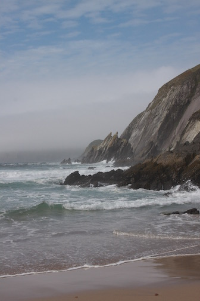

A few years ago my wife and I took a two week trip to Ireland. We chose Ireland due to cost and the ease with which you can travel across the country. Not to mention it was on our list of places we wanted to visit.
We started our adventure in Dublin, which featured a visit to the Guinness Store House. Prior to going Guinness was my favorite beer and I could not miss the opportunity to enjoy it straight from where it is created.
After Dublin we planned to visit a couple of other cities and rented a car to get around. Driving on the opposite side of the road was not so bad, but trying the follow directions and read Galic street names proved quite difficult. It was hard to follow what was meant by a round about as they where all different sizes and configurations. Needless to say we got lost a few times. It was well worth it to have the freedom a car provides so get to some beautiful countryside and views.
There are many resources to learn more about travel in Ireland, however I prefer this website. The user experience is quite pleasant with pictures and easy navigation. You can book your entire trip from here and they provide some sample itineraries as well.